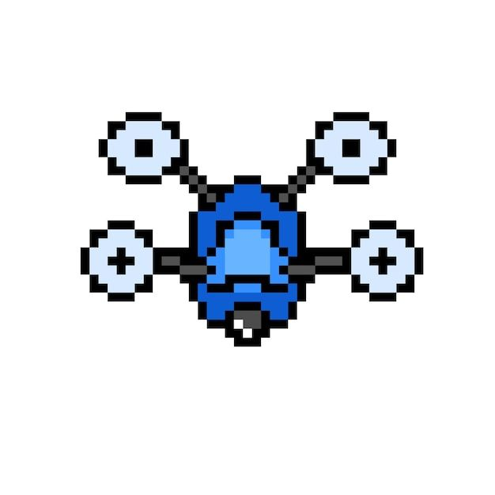
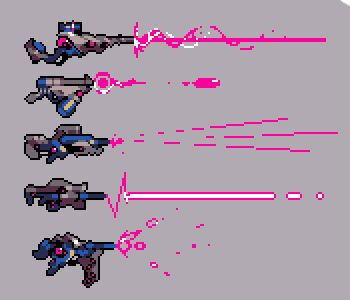
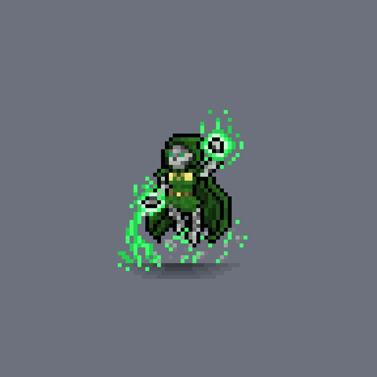

FPGA-native deterministic edge compute for a modular autonomous ground platform. Sensors, fusion, IMM-UKF prediction and vehicle control run on dedicated hardware rather than behind an operating-system scheduler, so the critical path has bounded, scheduler-free latency.
The weapon and fire-control chain is one isolated mission payload, not the centerpiece. A formal nav→fire isolation proof enforces the platform↔payload boundary.
FPGA-deterministic critical path plus a supervisory SoC. Mission planning, operator UX and non-deterministic inference run on the SoC; detect → track → lead → aim runs on fabric.
Full UKF predict + update in one entity. 1-D constant-acceleration model, state [p, v, a], H = I, Q16.16 throughout. One shared matmul, time-multiplexed.
CV (cruise) and CA (maneuver) fixed-gain filters run on the same stream. The bank picks the model with the smaller EWMA innovation, with hysteresis.
After one measurement P converges toward R. det(S) ≈ 0.02³ lands at ~1 LSB, the singular guard trips, and the gain goes to zero. From step 1 the filter dead-reckons: ct_6g velocity freezes at 40.03 m/s while truth swings to 124 m/s.
The band was one-sided until a mutation test showed a wire scoring 1.0. Accuracy is now gated relative to float64 (1.5× margin, 0.1 m floor).

Mixed, progressive targets: a Stage-1 pendulum first, then a C-UAS drone tracked on the move.
Tier A cocotb↔GHDL HIL, Tier B MATLAB/Simulink physics, Tier C ROS 2 / Gazebo. Enriched physics twin cross-validated.

Laser designator first, ballistic later. Aim / ROE / interlock chain only; no terminal-effect modelling.

Pursuit and protection agents trained in the twin, each adapting to the other's strategy before transfer to HIL.
Physical bench (M5) → rolling chassis (M6) → closed-loop autonomy on the real UGV (M7) are locked until the board lands. Bring-up runbook and bitstreams are staged.